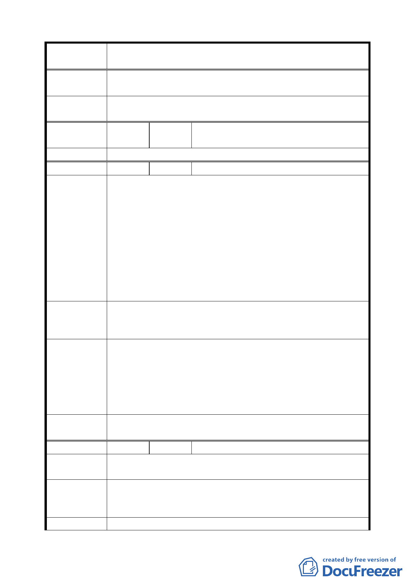

案 名 臺北市文山區都市計畫通盤檢討（主要計畫）案
（ 9 4 . 7 . 4 ） 二、至於是否提供 1/3 土地做為公園用地、增加商業使用規
定等意見，則於另擬細部計畫時再予併案處理。
委員會議
決議
依專案小組審查結論辦理。
編
號 ３6
陳情人
祭祀公業周振西記
（09430152600）
周武雄
全案移至細部計畫綜理表編號 26。
編 號 ３7 陳情人 工務局新建工程處（09430157600）
建議位置：文山區萬慶段三小段 308-2 地號。
建議理由：
本次文山區通檢擬將文山萬慶段三小段 308-2 地號（屬市府
土地，位於滬江中學校園範圍內，原為計畫道路用地）變更
陳 情 理 由 為滬江中學用地，依擬變更之內容，育英街 17 巷將無法直接
（ 主 景 6 ） 通往羅斯福路 6 段，需經由尚未開闢之 6 米育英街 17 巷 5
弄，經查該巷內 308 地號（面積 174 平方公尺）屬滬江中學
所有，目前由該校圍牆及建物佔用部分道路，因本巷道開闢
經費龐大，建議透過與 308-2 地號換地方式，以節省道路開
闢經費。。
文山區萬慶段三小段 308 地號（面積 174 平方公尺）之滬江
建 議 辦 法 中學所有之計畫道路設施用地與本府所有之同段 308-2 地號
部分辦理交換。
一、本案涉及 12 公尺計畫道路廢除，基於交通需求必須開闢
專案小組
會勘結論
（94.7.25）
6 米育英街 17 巷 5 弄巷道作為替代道路。
二、基於上述考量，滬江中學須退縮育英街 17 巷 5 弄巷道現
有圍牆範圍（文山區萬慶段三小段 308 地號，屬於道路
用地、滬江中學所管有之土地）無償提供六米巷道作為
通行使用。
委員會議
決議
依專案小組審查結論辦理，並修正本案「主景 6」計畫內容。
編 號 ３8 陳情人 楊勝原（09430333400）
陳情理由
（木柵）
一、移至細部計畫綜理表編號 27。
建 議 辦 法 二、木柵路三段原欣欣客運木柵站（木柵段小段 302 地號）
變更為停車場用地或廣場用地。
專 案 小 組 一、移至細部計畫綜理表編號 27。
二三